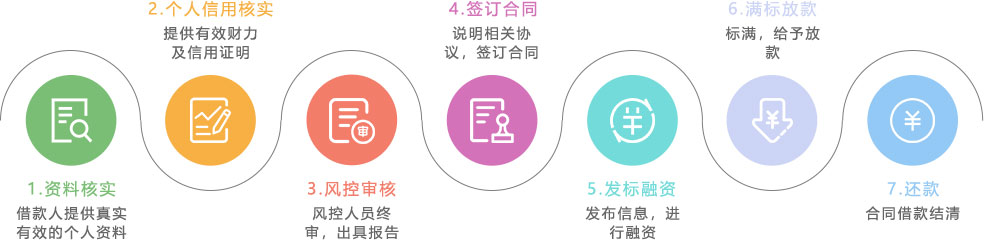

什么是消费贷？
消费贷消费贷是为广大年轻消费者群体提供的一项满足个人日常消费、购置车辆、原料采购、资金周转、副业经营等一款产品。平台利用大数据建立优良的风控模型准确高效的识别高信用人群充分审核个人信用资质后提供快速借款服务。平台会对每个借款人进行严格的准入条件筛选及多层调查审核和资信评估审核，评定该借款项目真实，风险可控，予以作为借款标的在平台发布。
【信用评审】
CREDIT EVALUATION
【逾期保障机制】
OVERDUE GUARANTEE
MECHANISM
【合法合规】
LEGAL COMPLIANCE
【法律保障】
LEGAL GUARANTEE
【风险可控】
CONTROLLABLE RISK
消费贷办理流程
常见问题
1、什么是消费贷？
消费贷是针对大量的消费者群体进行个人日常消费的贷款产品，借款人凭借个人信用信息及其他资产证明来筹集借款资金。
2、消费贷的风险如何把控？
九趣网有严苛的风控系统，在借款人提出申请时，九趣网会对出借人进行严格的筛选，从借款人的收入来源、担保措施、还款来源以及个人信用评估等，多方面进行评判，保证出借人的资金安全。
3、消费贷适合什么样的人投资？
资金量较小，想投资中短期标的比较稳健的出借人进行投资。
4、消费贷如何甄别筛选目标客户，把控资金出借的风险？
九趣网利用大数据建立优良的风控模型准确高效的识别高信用人群充分审核个人信用资质后提供借款服务。经过严格的准入条件筛选及多层调查审核，评定该借款项目真实，风险可控，予以通过。